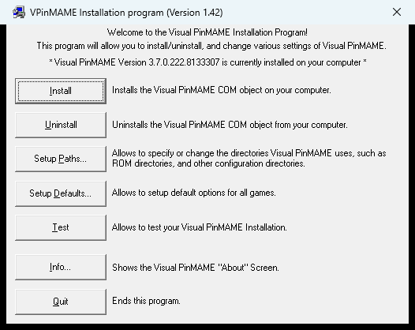
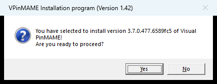
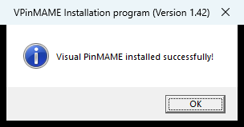
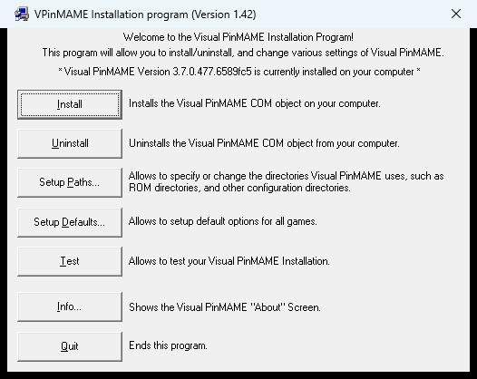
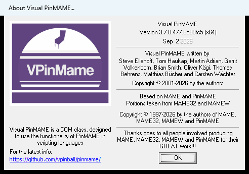
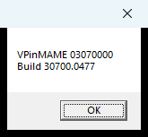

Update VPinMAME to 3.7
Beta / Pre-release · Windows VPX 10.8
Some new table releases say "You will need the latest pre-release of VPinMAME (build v3.7.0-237 or later)". VPinMAME is the ROM emulator that the Windows version of Visual Pinball talks to. Updating it means swapping one DLL and one setup program in your VPinMAME folder and pressing Install. Your ROMs, high scores and settings stay where they are.
Written from the official PinMAME release files, README and 3.7 change notes. File names and sizes are from build 3.7.0-477. Back up before you start (step 3).
1. Do You Need This?
Yes, if you play on Windows VPX 10.8
- You run
VPinballX64.exeorVPinballX_GL64.exe, usually through PinUP Popper or another frontend. - A table's notes ask for VPinMAME 3.7 or a minimum build number.
- A table shows errors or lamps, flashers or solenoids that don't behave, and the author says to update VPinMAME.
"VPinMAME", not "PinMAME"
The release page has several downloads. PinMAME, PinMAME32 and libpinmame are for developers and other programs. Only VPinMAME is the one Visual Pinball uses.
2. Download the Right Zip
Go to github.com/vpinball/pinmame/releases. The 3.7 builds are marked Pre-release and listed above the last full release (3.6). Take the newest 3.7 pre-release, open Assets, and pick one zip.
| Zip | Use it when |
|---|---|
VPinMAME-3.7.0-…-win-x64.zip | you run 64-bit VPX (VPinballX64.exe, VPinballX_GL64.exe). Most setups. |
VPinMAME-3.7.0-…-win-x86.zip | you run 32-bit VPX (VPinballX.exe). You can install both. |
VPinMAME-sc-3.7.0-… | skip it. It adds the colourised Stern S.A.M. ROM sets (legacy colour mods); only use it if you know you need those ROMs. |
Use the regular VPinMAME- zip. Ignore the PinMAME-, PinMAME32- and libpinmame- zips. The number after 3.7.0- is the build: higher is newer.
Direct downloads: build 477
The newest pre-release on 5 Nov 2026, and the one used for this guide:
Newer builds come out often. Check the releases page for a higher number before you download.
What's in the x64 zip
VPinMAME64.dll the emulator (12 MB)
Setup64.exe registers it with Windows
VPMAlias_template.txt built-in ROM aliases (reference)
gamelist.txt supported games
whatsnew.txt, whatsnewVPM.txt, pinmame.txt,
visual pinmame.txt, license.txtThe x86 zip has VPinMAME.dll and Setup.exe instead. Only the two bold files matter for the update.
Check the build number
If a table asks for "3.7.0-237 or later", build 222 is too old, even though it's also 3.7. On 5 Nov 2026 the newest pre-release was 3.7.0-477.
3. Find Your VPinMAME Folder & Back Up
Where is it?
It's the folder that holds VPinMAME64.dll, Setup64.exe and the roms, nvram and cfg folders. Common places:
C:\vPinball\VisualPinball\VPinMAME\(PinUP Popper "Baller" installs)C:\Visual Pinball\VPinMAME\(older manual installs)
Not sure? Search your drive for VPinMAME64.dll. If you find more than one, the one that's registered is the one Setup last installed. Running Setup from the right folder in step 4 fixes that anyway.
What do you have now?
Run Setup64.exe in that folder and read the line near the top. This machine had build 222, too old for tables that need 237 or later. Press Quit.

Before: "Version 3.7.0.222.8133307 is currently installed".
Back up first
- Make a folder named after the version you have, such as
VPinMAME\_backup-3.7.0-222orVPinMAME\_backup-3.6. - Copy
VPinMAME64.dll,Setup64.exe(andVPinMAME.dll,Setup.exeif you have them) into it.
That's all you need to go back (section 7).
Don't touch
roms, nvram (high scores), cfg (game settings), altsound, altcolor, VPMAlias.txt and any dmddevice.dll. The update doesn't replace them.
4. Replace the Files & Press Install
Step by step
- Close Visual Pinball, your frontend (PinUP Popper, PinballY…) and anything else using VPinMAME. Windows won't let you replace a DLL that's in use.
- Right-click the downloaded zip › Properties. If there's an Unblock box at the bottom, tick it and press OK.
- Extract the zip to a temporary folder (not straight into VPinMAME).
- Copy
VPinMAME64.dllandSetup64.exeinto your VPinMAME folder and choose Replace. - Right-click
Setup64.exein the VPinMAME folder › Run as administrator. If Windows Defender says it "protected your PC", click More info › Run anyway, then Yes when Windows asks to allow changes. - Press Install. It registers this folder's DLL with Windows and should confirm it.
- Close Setup. You don't need to change any defaults.
- Using 32-bit VPX too? Repeat with
VPinMAME.dllandSetup.exefrom the x86 zip.

Install asks first: check the build number, then press Yes.

"Visual PinMAME installed successfully!" Press OK.
Why press Install?
VPX finds VPinMAME through Windows (it's a COM object, VPinMAME.Controller). Install records which DLL to use. Pressing it after every update makes sure Windows points at the new file in this folder, not an old copy somewhere else.
Don't be fooled if Setup already shows the new number before you press Install. It reads the DLL Windows has registered, and if that's the same file you just replaced, it shows the new version straight away. Press Install anyway.
The other text files
whatsnew*.txt,gamelist.txt: safe to copy over, just documentation.VPMAlias_template.txt: new in 3.7. It lists the built-in aliases for reference. The 3.7 zips no longer include aVPMAlias.txt, so your own edited one is safe; it now only needs your personal entries.
Update core.vbs too
Newer tables also expect the 10.8 scripts (core.vbs, controller.vbs…) in VisualPinball\Scripts\. If you've updated VPX itself recently, you have them.
Using PinUP Popper? The Popper Updater should take care of this for you.
5. Check Which Version Windows Uses
Easiest: run Setup64.exe again. Near the top of its window it says "Visual PinMAME Version 3.7.0.… is currently installed on your computer". The number after 3.7.0. is the build; it should match the zip you downloaded (for example 3.7.0.477). Then press Quit. Setup.exe does the same for the 32-bit version.

After: "Version 3.7.0.477.6589fc5 is currently installed".

Info… in Setup shows the build date and whether it's the (x64) or 32-bit DLL.
Or check without opening Setup, with this small script:
- Open Notepad and paste the two lines on the right.
- Save as
vpm-version.vbson your desktop (Save as type: All Files). - Double-click it. A box shows the version and build.
Double-clicking runs the 64-bit script host, so it checks 64-bit VPinMAME. Version shows 03070000 for every 3.7 build, so look at the second line: PMBuildVersion is new in 3.7, and 30700.0477 means 3.7.0 build 477. On an older VPinMAME the second line gives an error, which also tells you it isn't updated.
Set c = CreateObject("VPinMAME.Controller")
MsgBox "VPinMAME " & c.Version & vbCrLf & "Build " & c.PMBuildVersion
The result after updating to build 477.
"Can't create object" means VPinMAME isn't registered for this bitness: go back to step 4 and press Install as administrator.
6. Example: Dungeons & Dragons (Bally 1987) 2.4
The VPW mod by RobbyKingPin and team asks for "the latest pre-release of VPinMAME (build v3.7.0-237 or later)… not PinMAME, it has to be VPinMAME".
Its script uses UseVPMModSol = 2, the newer mode where VPinMAME reports the real brightness of lamps, flashers and solenoids. Older VPinMAME builds don't handle it the way this table expects.
- Virtual Pinball Spreadsheet entry (download links, backglass, ROM)
- Video
7. Going Back to Your Old Version
3.7 is a pre-release. If an older table misbehaves:
- Close VPX and your frontend.
- Copy
VPinMAME64.dllandSetup64.exeback from your backup folder (for example_backup-3.7.0-222) into the VPinMAME folder, replacing the new ones. - Run
Setup64.exeas administrator and press Install.
Report the table on the PinMAME GitHub or Discord, so it can be fixed before 3.7 is final.
8. Troubleshooting
"File is in use"
Something still has VPinMAME loaded. Close the frontend and VPX (check the system tray), or restart Windows and copy again.
"Can't create object VPinMAME.Controller"
Not registered for this VPX. Run the matching Setup (64 for 64-bit VPX) as administrator and press Install.
Still the old version
Windows points at another copy. Run Setup from the folder you updated and press Install again.
Antivirus removed the DLL
Some antivirus programs flag new emulator builds. Restore it from quarantine, add an exception for the VPinMAME folder, and download only from the official GitHub page.
Works from VPX, not from the frontend
The frontend may launch 32-bit VPinballX.exe, which uses the 32-bit VPinMAME. Update that one too (x86 zip), or point the frontend at VPinballX64.exe / VPinballX_GL64.exe.
High scores gone
They're in nvram, which the update doesn't touch. Check VPX is using the same VPinMAME folder as before.
Colour S.A.M. ROM not found
Those sets are only in the VPinMAME-sc- zips. Install that variant instead.
💎 VPINMAME PRO TIP
Keep the backup folder and the downloaded zip. Switching between versions is just two files and an Install press, so you can always test a new build and go back in a minute.
Using PinUP Popper "Baller"?
Its update utility can do this for you. This guide is for when a table needs a newer build than the utility offers.
Sources: PinMAME releases (3.7.0-477 zips, visual pinmame.txt, whatsnewVPM.txt), the PinMAME README, and tjaf's VPUniverse tutorial Manually updating VPX, VPinMAME and B2S server, which also covers updating VPX and B2S Server.